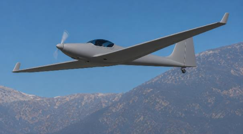
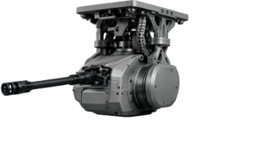

השקעה מבוקשת תמורת אחזקה שתוגדר במשא ומתן.
תקציר מנהליםיולי 2026
AIRSHIELD.AI · מערכת מגן תוקף
מערכת מגן תוקף
להגנת גבולות.
נוכחות רציפה מעל גבולות ישראל ונקודות חיכוך, זיהוי מוקדם בשטח האויב ונטרול מבוקר לפני הגעה לקו המגע — תוך הפחתת עלויות היירוט, ההפעלה והמערכת.
01 נוכחות רציפה
02 זיהוי מוקדם
03 נטרול מבוקר
הפלטפורמה
נוכחות אווירית מתמידה.
מערכת אחת, מבט מלא.
מודל תלת־ממד אינטראקטיבי של פלטפורמת AirShield: גררו לצפייה ב־360°, התקרבו ופתחו את תחנות המערכת.
01 קיפול כני נסע
02 פתיחת התא
03 שחרור כלי ראשון
04 שחרור כלי שני
05 טיסת מבנה
06 רחפן מתביית
יעד: סדרת טיסות ניסוי לאחר הדגמה קרקעית משולבת.
אפשרויות חימוש, לרבות חימוש משוטט, כחלק מסל החימוש של המערכת.
ארית אינה נכנסת להשקעה פיננסית בלבד, אלא לשותפות אסטרטגית סביב מערכת אווירית היכולה לשאת, להפעיל ולמנף חימושים מתקדמים.
מערכת משולבת
מערכת אחת.
ארבע שכבות מבצעיות.
הפלטפורמה, הקישוריות, תחנת השליטה וממשק המפעיל פועלים כליבה אחת — מהגילוי ועד להחלטה.
ליבת ההחלטה
עקרונות מפתח
- 01הפעלה אינטואיטיבית באמצעות צוות קטן
- 02מיזוג חיישנים ותמונת מצב מלאה בזמן אמת
- 03ארכיטקטורה מודולרית, פתוחה ויתירה
- 04תקשורת מאובטחת עם גיבוי LOS ו־SATCOM / Starlink
- 05אדם בלולאת ההחלטה לכל פעולה קריטית
קיצור זמן הגילוי, קבלת ההחלטה ונטרול האיום באמצעות תמונת מצב אחת ורצף הפעלה אחוד.
ארכיטקטורת מערכת
מערכת מוגדרת.
שכבה אחר שכבה.
חמש שכבות הנדסיות מפרידות בין בקרת הטיסה הקריטית, מחשוב המשימה, הקישוריות והפעלת המערכת — ומציגות בבירור מה הוגדר ומה עדיין טעון אימות.
01
כלי טיס
כלי טיס יעיל, מבוסס מסלול
פלטפורמה בעלת מוטת כנף גדולה, המבוססת על פרופורציות Ximango, תומכת ביעד השהייה; הפעלה ממסלול מפשטת התאוששות, תחזוקה וניסויי טיסה חוזרים.
מצב: בסיס התכן הוגדר · כפוף לתכן מפורט
- חלוקה ניתנת להתאמה בין דלק למטען
- המראה ונחיתה ממסלול
- מסלול פיתוח מ־Block 0 ל־Block 1
בסיס תכנון
Block 0 מוכיח את המסלול.
Block 1 מגדיר את היעד.
Block 0 מבסס קו־ייחוס לניסויי טיסה באמצעות הסבת המטוס הנוכחי. Block 1 הוא יעד התכן המיועד לייצור, לביצועים ולצמיחה.
פרמטר הנדסי
BASELINEBlock 0
OBJECTIVEBlock 1
מנוע
Rotax 914 F3115 hp בהמראה
Rotax 916 iS/iScיעד 160 hp
משקל המראה מרבי
1,000 ק״גבסיס תכנון
1,200 ק״גיעד תכן
מסת פלטפורמה
כ־540 ק״גאומדן תכנון
500 ק״גיעד
דלק ומטען
250 + כ־210 ק״גדלק + מטען
עד 700 ק״ג שימושייםחלוקה ניתנת להגדרה
מהירות שיוט
105–120 KTASאומדן
150–170 KTASיעד הנדסי
גובה
20,000–26,000 ftקטגוריית ביצועים
23,000 ft / 30,000+בסיס / יעד צמיחה
שהייה
28+ שעותאומדן אנליטי
עד 50 שעותיעד הנדסי
מצב
מטוס ייחוס מוסבניסויי טיסה
תכן מיועד לייצורProduction-intent
הערת תכן: הנתונים הם אומדנים הנדסיים ניהוליים ואינם נתונים מוסמכים. הם כפופים לתכן מפורט, אישור ספקים, בדיקות קרקע וטיסה, כשירות אווירית ואישור רגולטורי.
ניסיון מוכח
הסבת מטוסים מאוישים לפלטפורמות בלתי מאוישות אינה תקדים.
הניסיון העולמי מציג כמה מסלולים אפשריים להסבה, אינטגרציה ושינוי תצורה — ממטוסים קלים ועד פלטפורמות מנהלים.
Diamond DA 42Burt Rutan · Long‑EZPiaggio · Avanti 180


החיבור לארית
מוצר משותף עם נתיב ניסויים ויכולת צמיחה.
חימוש משוטט, אלקטרוניקה, בקרה ויכולת ייצור מתחברים לפלטפורמה אווירית מלאה — ולא למוצר בודד.
חימוש משוטט כמנוע צמיחה
נשיאה, שיגור וניהול מהאוויר; הארכת טווח וגמישות הפעלה; יכולת מוצר משותף עם ארית.
אלקטרוניקה ובקרה
מחשב משימה, חיישנים וקישוריות; מרעומים, בקרה וממשקי חימוש; אינטגרציה ביטחונית כחול־לבן.
פלטפורמה מתמידה ורב־משימתית
שהייה בגזרה, מטען קינטי, חימושים נוספים, תא מטען פנימי ונקודות קשיחות.
ערך לקוח ברור
מענה לאיומים רבים וזולים, עלות פעולה נמוכה יותר ותגובה מוקדמת לפני קו המגע.


ההזדמנות היא להפוך יכולות חימוש ואלקטרוניקה לחלק ממערכת אווירית שלמה עם סיפור מבצעי, נתיב ניסויים ויכולת צמיחה מעבר למוצר בודד.
תוכנית עבודה
18 חודשים מהשקעה לסדרת טיסות ניסוי.
ההשקעה מיועדת לייצר התקדמות מוחשית: מדגים קרקעי, אינטגרציה וסדרת טיסות הדגמה עבור לקוחות.
- 0–3 חודשים
יישור קו והשקעה
משא ומתן טכני ומסחרי, Term Sheet והשקעה מול אבני דרך, והגדרת שיתוף הפעולה.
- 3–6 חודשים
רכישת פלטפורמות ותכן
AlonS לישראל, הקפאת ממשקים ותצורה, ותכן מערכת VR, AI ותקשורת.
- 6–12 חודשים
הדגמה קרקעית משולבת
GCS/VR, קישוריות ו־AI Edge; שילוב AKP וחימוש משוטט; בדיקות קרקע וסימולציות.
- 12–18 חודשים
סדרת טיסות ניסוי
הרחבת מעטפת, אימות שליטה ותקשורת, אימות מטענים והחלטת המשך עם לקוח עוגן.
שימושי הכספים
פלטפורמות והסבה · אינטגרציה · תחנת שליטה · תקשורת · AI ובטיחות · AKP · חימוש משוטט · ניסויים ותיעוד
היעד מהפגישה
עניין אסטרטגי עקרוני · צוות בדיקה משותף ל־30 יום · מסגרת שיתוף פעולה · עקרונות השקעה ואחזקות
המייסדים וההנהלה
ניסיון מבצעי. הנדסה עמוקה. יכולת ביצוע.
צוות היודע לחבר צורך מבצעי, פלטפורמה, מערכת AI ולקוח ביטחוני למוצר מורכב ובר־ניסוי.
אביאל אלוני מייסד שותף ומנכ״ל
סא״ל במיל׳ בטייסת כטמ״ם. למעלה מ־30 שנות ניסיון בהפעלה מבצעית, ניהול לקוחות ביטחוניים והובלת פרויקטים במשרד הביטחון ובתעשיות הביטחוניות.
קובי בלנק מייסד שותף וסמנכ״ל טכנולוגיות
רס״ן במיל׳ בטייסת כטמ״ם. מעל 30 שנות ניסיון בהנדסת מכונות, תוכנה, מערכות בלתי מאוישות ואינטגרציה.
דורון אלוני מייסד שותף וסמנכ״ל AI
כ־30 שנות ניסיון בהייטק, DevOps, תשתיות תוכנה, AI ודאטה. מוביל ולידציה, אוטומציה ותמיכה בהחלטות מפעיל.